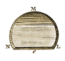
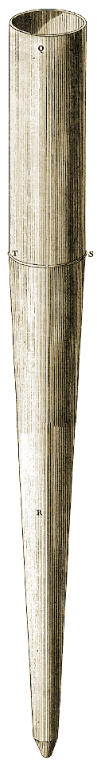
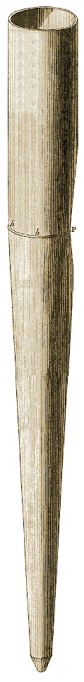
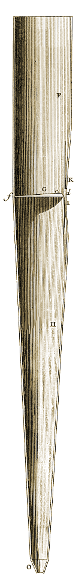
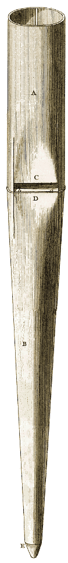
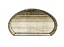
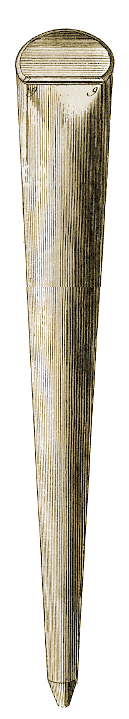

Figures
108, 109, 110, 111, 112, 113, 114.
Planche : précédente - suivante.
|
Fig. 110 138.  |
 138. |
 138. |
 138. |
 138. |
|
Fig. 111 138.  |
||||
|
Fig. 112 138.  |
||||
| Fig. 114 | Fig. 113 | Fig. 109 | Fig. 108 |
Planche : précédente - suivante.